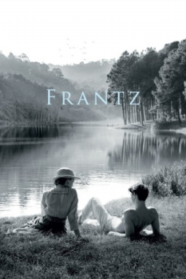

Frantz (2016)



Avaliação (TMDb):


7.4/10 (516 votos)
Avaliação (Usuário):
País:France, 113 minutos
Idiomas falados:Alemão, Francês, Português
Gênero(s):História, Drama, Romance
Diretor(s):François Ozon
Codec:MPEG-2 (DVD)
Número: 3441
Sinopse:
Em uma pequena cidade alemã após a Primeira Guerra Mundial, Anna visita diariamente o túmulo de seu noivo Frantz, morto na França. Um dia, um jovem francês, Adrien, também deixa flores no túmulo. A presença dele logo após a derrota alemã inicia paixões.
Elenco:
Paula Beer, Pierre Niney, Ernst Stötzner, Marie Gruber, Johann von Bülow, Anton von Lucke, Cyrielle Clair, Alice de Lencquesaing, Axel Wandtke, Rainer Egger
Tipo de mídia: DVD5,
Legendas: Português
Alugado: Não
Tela: 2.55:1